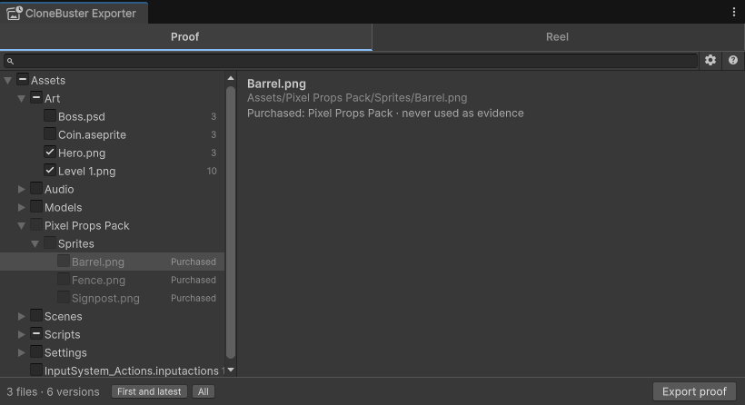

How CloneBuster proves your work
A clone can copy a finished game. It can't copy the dated history of how the game was made. CloneBuster keeps that history: a record of every version of your files, each one timestamped by authorities that anyone can check without CloneBuster.
Every version, recorded as you save
CloneBuster watches your Assets folder and any source folders you add, such as the folder that holds
your PSD files or your store-page material. When a file changes, CloneBuster waits until it stops changing, then
computes its SHA-256 hash, a fingerprint unique to that exact content, and records the hash as a new version.
Versions you save within a few seconds of each other form one batch, and each batch is timestamped once. The first snapshot of the project is a single batch, however many files it holds.
CloneBuster also scans every recorded folder when the Editor starts, after each script compilation, and every few minutes, so a file you change while Unity is closed is recorded too.
Hashing, scanning and timestamping run in the background, so they don't slow the Editor or your saves. Only previews use the Editor's time: it decodes each new image and renders each new model, a few at a time. If large models slow it after each import, turn off Model preview for their format.
Two independent timestamps
Each batch is timestamped by two authorities that don't depend on each other:
| Authority | What it gives you |
|---|---|
| An RFC 3161 timestamp authority, FreeTSA by default | A signed token, issued within seconds, in the standard timestamp format. |
| OpenTimestamps | A proof anchored in the Bitcoin blockchain, usually a few hours later. No wallet, fee or cryptocurrency is involved: public servers called calendars collect hashes and write one transaction for all of them. |
CloneBuster lists a batch's hashes in a text file, its manifest, and both authorities receive only the hash of that manifest. They never receive your files, their names, or their individual hashes.
FreeTSA's certificate is valid until 2040, and the Bitcoin proof never expires.
Previews taken at save time
A hash proves a file existed. A reviewer also needs to see what it looked like. When you save an image or a model, CloneBuster makes a preview of that version at once, at most 1080 pixels on its longer side, and lists the preview's hash on the same manifest line as the file's. The preview is therefore timestamped with the version it shows.
A preview has to be made when you save: once the file changes, that version's image is gone. For the formats CloneBuster reads, refer to Supported formats.
Originals come from your own history
CloneBuster keeps no copies of your files. For each version it stores the hashes, the two timestamps and the preview. An export doesn't include originals either: if someone asks for one, you send it yourself. So the export looks for each version you picked in these places, and warns you when it can't find one (code and text files aren't checked):
- The file on disk, when its content still matches.
- The file's last 300 commits in your git history, read through the
gitcommand, when the file is tracked. CloneBuster accepts a file from history only if its SHA-256 matches the timestamped hash, so git's own dates are never relied on.
A version found in neither place still exports with its hash, its proofs and its preview.
Purchased assets are never evidence
Another game may have bought the same asset pack as you, so a file you didn't make proves nothing. CloneBuster recognizes the files that come from the Asset Store and never records them:
- Files whose
.metafile carries theAssetOriginblock that Unity 6 writes on import. - Files whose GUID appears in a package of your local Asset Store download cache.

For assets from anywhere else, such as stock art or licensed audio, mark their folder as third-party. For more information, refer to Mark a third-party folder. CloneBuster reads all of this on your computer; nothing about your purchases leaves it.
What a timestamp proves
A timestamp proves that a file with this exact content existed by the authority's date. It doesn't prove who made the file, or how. CloneBuster doesn't certify that a work was made without AI, and it doesn't detect copies: you recognize your own work, and CloneBuster gives you the dated evidence for it.
Copyright protects expression, such as art, music, writing, levels and code. It doesn't protect game mechanics, so a clone that copies only how your game plays is outside what any notice can remove.